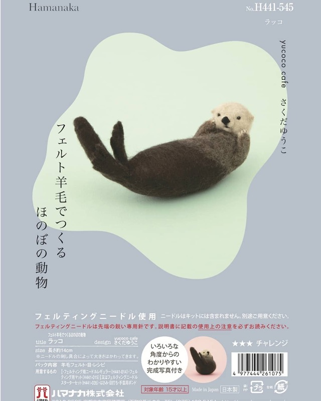
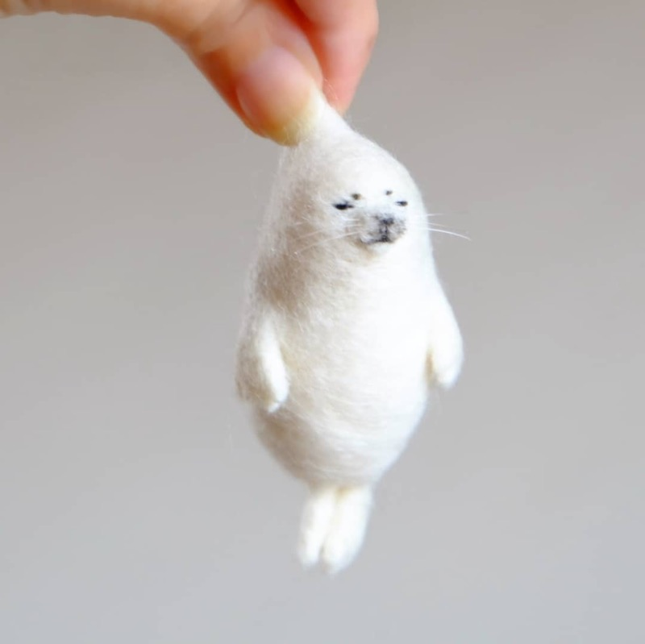

羊毛を針でちくちく刺して、
動物たちをかたちにしています。
羊毛フェルト作家 さくだゆうこ（yucoco cafe）
はりねずみさんや柴犬さんなど、手のひらサイズの動物たちを作っています。作品づくりのかたわら、2016 年からは出版社や手芸メーカー、玩具メーカーなど企業さまとのお仕事もひとつずつ手がけてきました。
著書 2 冊（日本ヴォーグ社）minne ハンドメイド大賞 2 年連続受賞企業さまとのお仕事 20 社以上
企業さまとのお仕事
本やキット、カプセルトイ、キャラクターなど、これまでにご一緒したお仕事の一部です。
2021年 本屋大賞 第2位
『お探し物は図書室まで』
『お探し物は図書室まで』
ポプラ社 2021年
書籍の装丁を担当
表紙・裏表紙の作品を制作しました。

ハマナカ株式会社 2019〜2021年
キット「ほのぼの動物」シリーズ
全国の手芸店で販売。第3弾まで続いています。

株式会社Qualia 2019年〜
カプセルトイ「つままれ」シリーズ
作品デザインを提供。ロングセラーになっています。

日本ヴォーグ社 2017・2018年
著書 2 冊を出版
『ほっこり動物とおうちカフェ』は発売2ヶ月で3刷に。
「かいけつゾロリ」
公式キャラクター制作
公式キャラクター制作
ポプラ社 2020年
キャラクターの立体化
公式SNS・Webサイトで使われる可動キャラクターを制作しました。
『フェルトの森の仲間たち』
カレンダー 2022・2023
カレンダー 2022・2023
オレンジページ 2022・2023年
年間カレンダーの作品制作
2年続けて発売されました。
これまでにしてきたお仕事の種類
こんなかたちでご一緒してきました。
本のための作品づくり
著書の制作、装丁や誌面のための作品提供。
日本ヴォーグ社 ／ ポプラ社 ／ 宝島社 ／ グラフィック社
キット・商品の共同開発
羊毛フェルトキットの設計・監修、カプセルトイやカレンダーの作品制作。
ハマナカ ／ Qualia ／ オレンジページ ／ minne×フェリシモ
キャラクター制作・作品提供
企業キャラクターの立体化、広告や撮影のための作品制作。
ポプラ社 ／ アドビ
展示・イベント
百貨店や書店での展示、ハンドメイドイベントへの参加。
西武 ／ 阪急 ／ そごう ／ 小田急百貨店 ／ TSUTAYA BOOKSTORE
講座・ワークショップ
教室や通信講座で羊毛フェルトの楽しさをお伝えしています。
ヴォーグ学園 ／ 日本ヴォーグ社 通信講座
取材・掲載
雑誌・書籍・ウェブメディアでのご紹介。
朝日新聞デジタル ／ モノ・マガジン ／ KADOKAWA
作品
ひと針ひと針、羊毛を刺してかたちにした動物たち。写真をタップすると大きくご覧いただけます。
ご相談の進め方
お問い合わせお仕事の内容や時期を、わかる範囲でお知らせください。
お話をうかがうメールでやりとりしながら、内容をご一緒に整えます。
お見積り・日程内容が固まったら、お見積りとスケジュールをお出しします。
制作・お届けひとつひとつ手で作り、お届けします。
小さな工房でひとつずつ作っているため、時期によってはお待ちいただくことがあります。
ふだんの制作は Instagram で
新作や展示のお知らせは Instagram（@yucococafe）でお届けしています。作品をお迎えいただける子は online store でご覧いただけます。